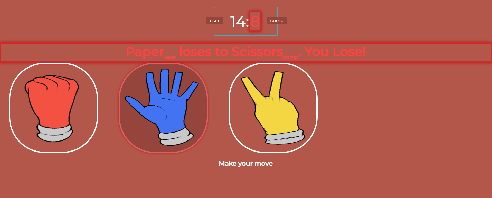
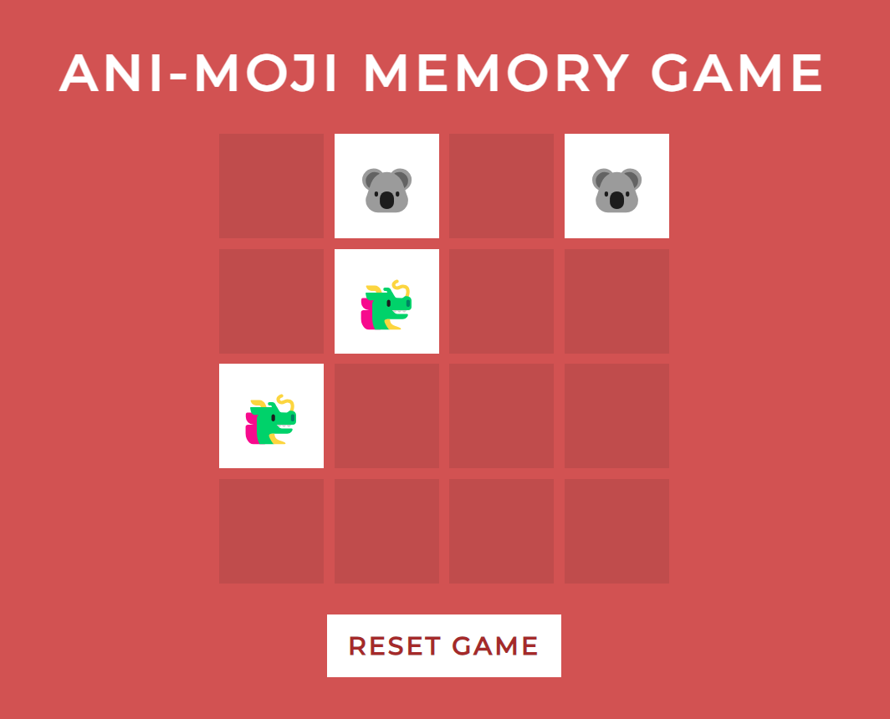
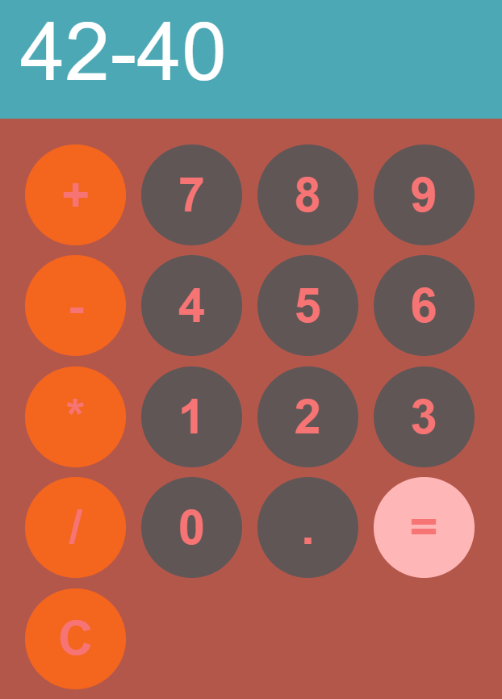
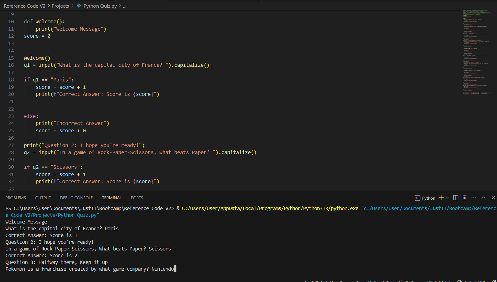
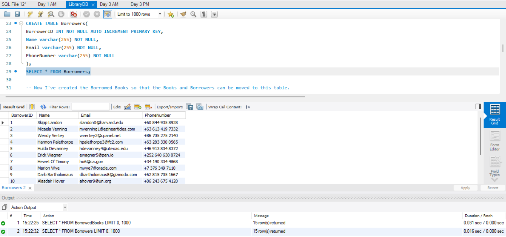
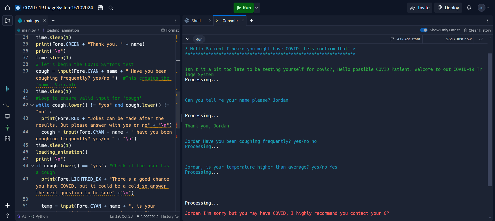

During my 8+ weeks of JustIT Bootcamp, I've accumulated a variety of coding skills in different languages. There is also some extra software that I'm familiar with that I believe can contribute to my skills as a Software Developer
My passion for art got me into using digital art software: including Clip Studio Paint and the pixel art software Aseprite. I'd love to use these softwares alongside CSS, JavaScript and Python to make games.
I'm a graduate in Level-3 Extended Mechanical Engineering at Uxbridge College.
I took a heavy bias towards simple game projects simply because they're fun
(Click the images to go to the site or click the Github Emoji to see the code behind it.)
A pretty fun, yet difficult task, the favourite part was drawing the hands myself with CSP.
(Made using JavaScript,CSS, HTML & Clip Studio Paint for the hands)


I had a much more interesting version, which included Pixel images I made, which were scrapped due to image issues and time constraint.
(Made using HTML & CSS, the JavaScript is in the HTML)

It's a calculator. It's everywhere, but it's nice to have around.
(Made using HTML,CSS & Javascript.)

One of 3 Python projects where I made a questionnaire, Number Guesser and Rock, Paper, Scissors(again)

An SQL project that involved gathering data on random borrowers, books and the books that were borrowed.
(Tools used were MySQL Workbench and Mockaroo to create the fake borrowers. I made sure the Book were with the Author though.)

This was my first experience with Coding. Before Visual Studio Code, I used Replit to create a COVID-19 Triage System, which would give advice on what to do if you have Covid-19 or not.
(Made using Replit)
